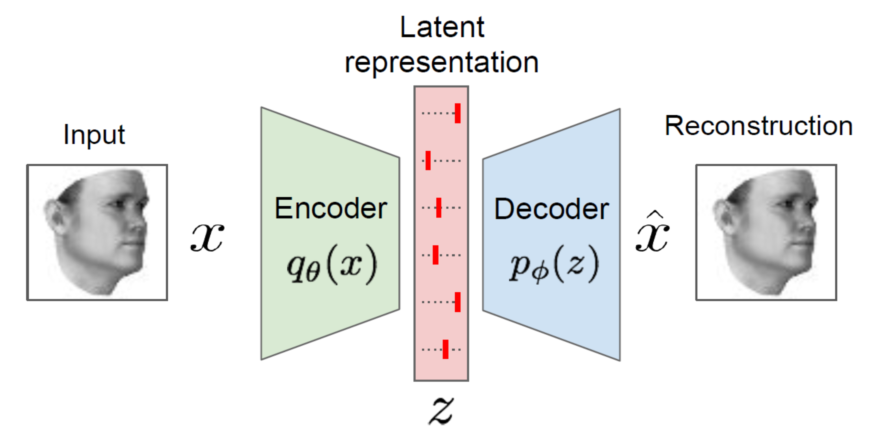

自编码器（Autoencoders，AE）是一种有着编码-解码结构的神经网络。

模型组成
AE由编码器和解码器两部分组成。编码器对输入进行编码，得到对输入的潜在特征表示；解码器对其进行解码，得到对输入的重建。
对于一组维度为$D$的样本$\pmb{x}^{(i)} \in \mathbb{R}^D$, $1 \leqslant i \leqslant N$输入，编码器的运算可表示为
式中，$q_{\theta}$: $\mathbb{R}^D \rightarrow \mathbb{R}^M$称为编码器；$p_\phi$: $\mathbb{R}^M \rightarrow \mathbb{R}^D$称为解码器。$\{\theta, \phi \}$为AE的可学习参数集。
模型优化
每个样本的重构损失
$l(\pmb{x}^{(i)}, \hat{\pmb{x}}^{(i)})$ = ${\parallel \pmb{x}^{(i)} - \hat{\pmb{x}}^{(i)} \parallel}^2$
整个数据集的重构损失为所有样本损失的均值
$\mathcal{L}(\pmb{x}, \hat{\pmb{x}})$ = $\frac{1}{N}\sum\limits_{i=1}^{N}l(\pmb{x}^{(i)}, \hat{\pmb{x}}^{(i)})$
通过最小化重构损失对AE进行优化。
参考资料
- A. Graves and M. Ranzato “Unsupervised Deep Learning Tutorial” PART 1 (Alex Graves). NeurIPS 2018.